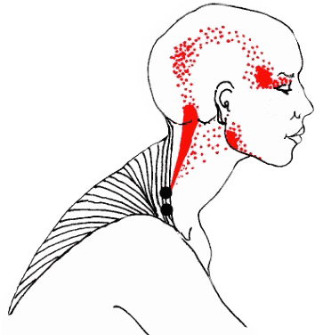

Hoofdpijn
Hoofdpijn is een zeer veelvoorkomende klacht met een sterk invaliderend effect op het dagelijks functioneren. Volgens het Nederlands Huisartsen Genootschap (NHG) heeft meer dan 60% van de Nederlandse bevolking wekelijks last van hoofdpijn. Dit wordt volgens het NHG voornamelijk onderverdeeld in Spanningshoofdpijn (60%) Migraine 15% en andere vormen zoals o.a. medicamenteuze hoofdpijn en clusterhoofdpijn (2-4%).

Er wordt wereldwijd veel onderzoek verricht naar de oorzaak van de verschillende soorten hoofdpijn, echter met betrekkelijk weinig eenduidige of zelfs tegenstrijdige conclusies.
Met betrekking tot migraine is bijvoorbeeld lang aangenomen dat het een neurovasculaire oorzaak heeft, oftewel dat er een zenuw te dicht langs een verwijd bloedvat loopt en dit ook de oorzaak is van de vaak pulserende ofwel de kloppende aard van migraine. Er is echter geen enkel deugdelijk onderzoek dat deze verklaring onderschrijft.
Over de pathofysiologie van spanningshoofdpijn is niet veel bekend. De oorzaak van spanningshoofdpijn, in het engels ook wel Tension Type Headache (TTH) genoemd, wordt door het NHG, ondanks de naam, niet vanuit spierspanning in de nek verklaard. Wél kan spanning of spierspanning de hoofdpijn uitlokken of doen verergeren net als bijvoorbeeld oververmoeidheid of een ‘verkeerde houding’.
Toch laten veel effectieve behandelmethoden voor hoofdpijn zien dat hoofdpijn vanuit de nek valt te reguleren en richten zich juíst op de bewegingsfunctie van de drie bovenste nekwervels en op houdingscorrectie en spanningsverlaging van de (kleine) nekspieren.
BackFysio™ combineert 3 van de meest effectieve behandelmethoden
1. De Watson Headache® Approach
Dr. Dean Watson PhD. (Adelaide – Australië), fysiotherapeut/ manueel therapeut en internationaal erkend hoofdpijnspecialist, doet al zijn hele werkende leven onderzoek naar migraine en hoofdpijn. Hij heeft een specifieke wetenschappelijke behandelmethode ontwikkeld voor de behandeling van hoofdpijn, spanningshoofdpijn, migraine en zelfs clusterhoofdpijn die inmiddels in 25 landen wereldwijd succesvol wordt gepraktiseerd. Dit wordt beschouwd als dé meest optimale behandelmethode voor spanningshoofdpijn en migraine.
Lees meer over de Watson Headache® Approach
2. Dry needling
Dry needling is een methode gebaseerd op triggerpoints. Dit zijn bepaalde punten in de spier waar spanning vaak blijft zitten. Door deze punten met een acupunctuur naald aan te prikken wek je een reflex op waardoor de spier zich uiteindelijk weer kan ontspannen.
3. McKenzie
McKenzie kijkt eigenlijk naar wat een gewricht wel of niet fijn vind. Zit je bijvoorbeeld vaak met een gebogen nek, dan is er een grote kans dat het strekken van een bepaald wervel niveau de klacht kan doen verminderen.
Zelfbehandeling is iets wat ook erg hoog in het vaandel van McKenzie staat. Hierdoor kan iemand zelf weer controle krijgen over zijn/haar klachten.
Lees meer over McKenzie therapie
Mijn ruime ervaring in de behandeling van hoofdpijn stelt me in staat klachtenpatronen, fysieke kenmerken en valkuilen snel te herkennen. Het gaat vaak om een combinatie van meerdere factoren die de hoofdpijn of migraine veroorzaakt maar ook in stand houdt en hier ligt tevens vaak een deel van de oplossing. Door het combineren van bovenstaande methoden zijn veelal alle vormen van hoofdpijn effectief te behandelen of tot een acceptabel niveau terug te dringen.